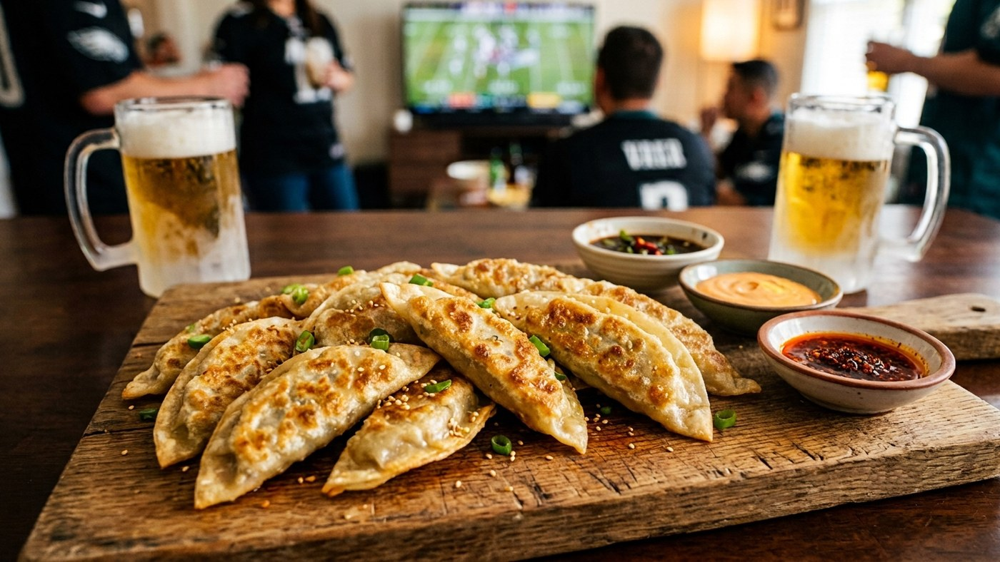
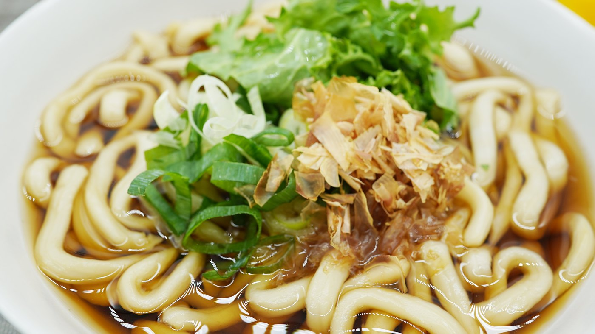
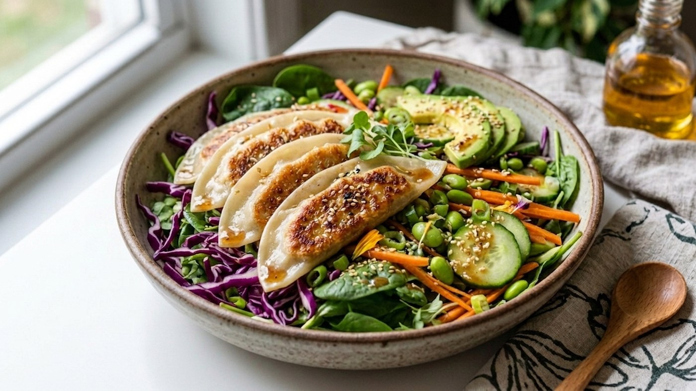

No thawing, no prep — miri dumplings go straight from freezer to table in minutes. Steam, pan-fry, or air fry, then finish with a quick dipping sauce.
Beyond the basics — a party platter, a warming soup, and a fresh salad bowl, all starting from frozen.

The play that never loses on game day: a wooden board piled with golden mandu, three game day appetizer dips, and cold beer. Feeds a room, disappears by halftime.

Korea's everyday comfort bowl, and the answer to how to make dumpling soup with frozen dumplings — no stock to build, no thawing, on the table in fifteen minutes.

Proof that crispy dumplings belong on a weeknight dinner plate, not just a snack tray. A lighter, vegetable-forward bowl for anyone eating less meat without giving up texture.
A.Boil water in a steamer or pot with a bamboo basket, line it to prevent sticking, arrange dumplings in a single layer, and steam 7–9 minutes from frozen.
A.Pan-fry them — golden on the bottom, then steam-finish with a splash of water under a lid. Or air fry at 375°F for 12–15 minutes.
A.Yes — no thawing needed. Steam, pan-fry, or air fry directly from frozen for the crispiest result.
A.Soy sauce, rice vinegar, sesame oil, a pinch of sugar, and scallion — ready in under a minute while your dumplings cook.